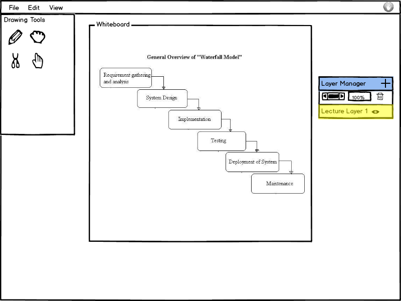
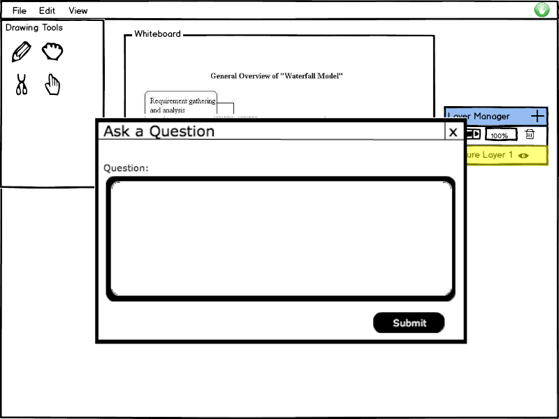
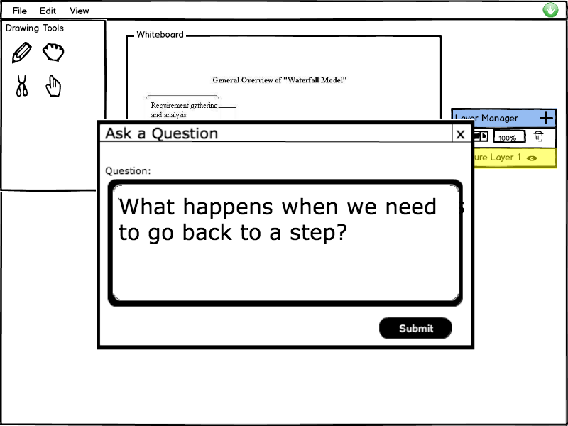

The student has the option to ask a question at any point during a presentation. The 'Raise Hand' button is located in the top right corner of the student view of the EClass.
Figure 1 shows the student's view of the presentation and the location of the 'Raise Hand' button.

Figure 1: Student View of Lecture
If the student doesn't need or want to ask the question anymore, they simply click the 'Raise Hand' button again and their hand comes down. On the presenter's screen, there is no longer any indicator that this particular student has their hand raised anymore.
Figure 2a shows the 'Raise Hand' question form and Figure 2b shows it filled in.
 
Figure 2: The Question Form.